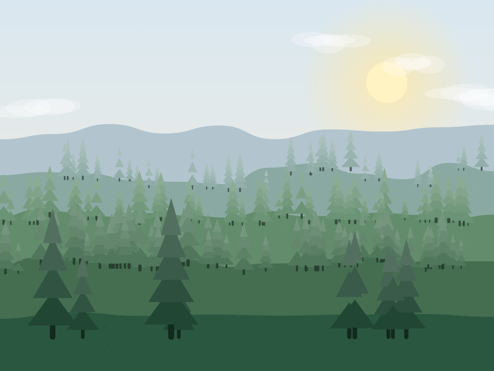
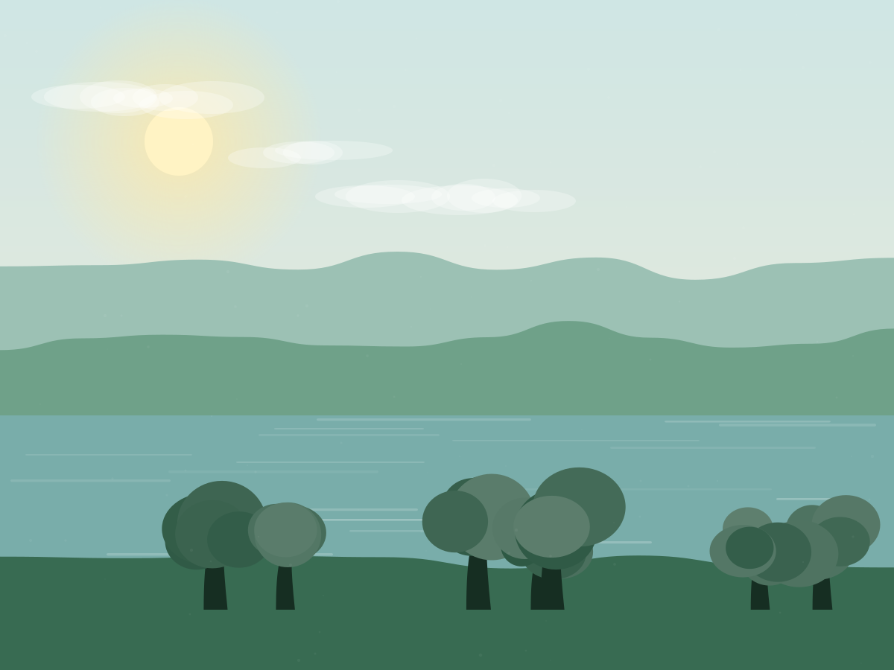
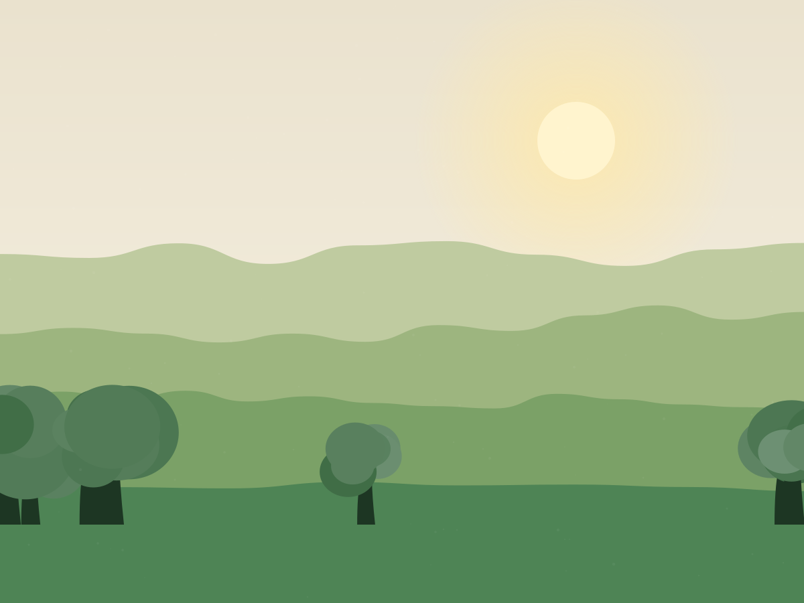
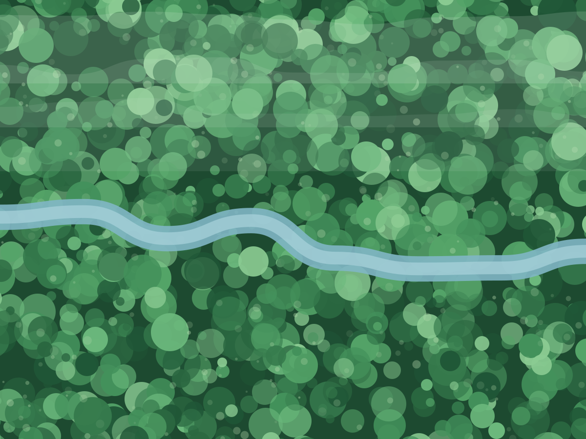
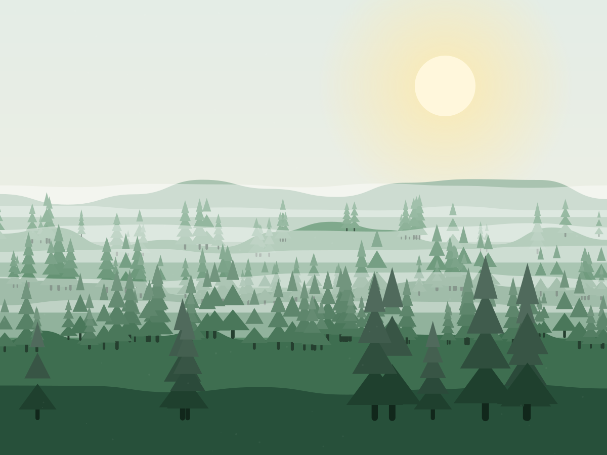
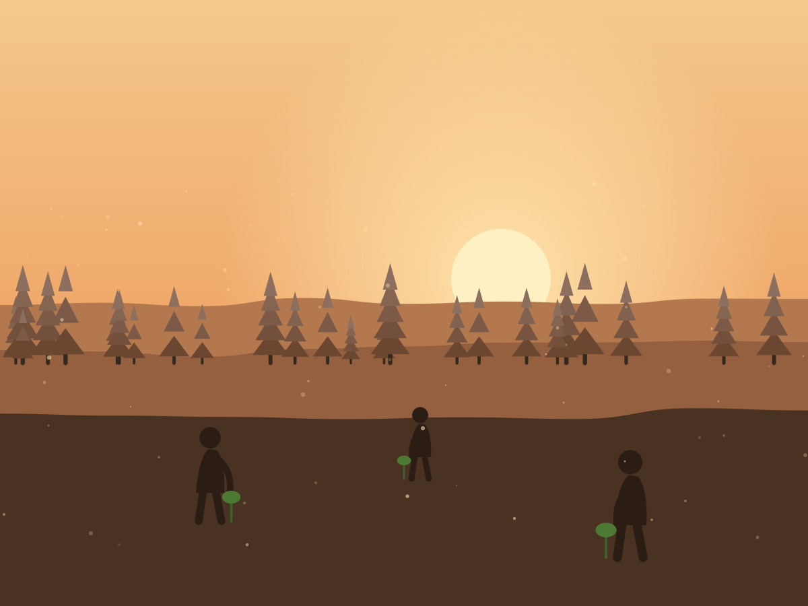

Riparian
Riparian
Aeron Valley Corridor
Eleven miles of riverbank shaded and stabilised, linking two ancient woodlands.
Riparian
Eleven miles of riverbank shaded and stabilised, linking two ancient woodlands.

UplandReturning bracken-choked sheep walk to montane scrub and birchwood.

Wet woodlandAlder and willow carr re-wetted across 120 acres of drained peat.

OrchardGrafting and replanting 41 Herefordshire cider varieties across nine farms.
No projects match that habitat yet — try another filter.

The Aeron used to run bare and warm between two fragments of ancient woodland five miles apart. We are stitching them back together with a continuous shaded corridor of alder, willow, hazel and oak — wide enough for dormice, cool enough for trout.
82,400
Trees planted
2.4°C
Cooler in shade
96%
Year-3 survival
Alder 28%, downy birch 18%, hazel 16%, sessile oak 12%, goat willow 10%, rowan 8%, bird cherry 5%, small-leaved lime 3%. All grown from seed collected between Glasbury and Talgarth.
The 2021 winter planting on the eastern bank lost 31% of stock to voles because we skipped guards to save money. We replanted at our own cost in 2022 and now guard every riparian plot.
Fourteen separate landowners, each with a 100-year covenant registered against the title. Rootstock holds the management obligation; the landowner keeps the land.
Above 380 metres, nothing has regenerated here in eighty years of hard grazing. We took the sheep off half the hill, and are planting a graded mosaic — birch and rowan low down, juniper and montane willow at the top, open ground left deliberately open.

Drained in 1974, this peat basin was losing more carbon every year than our entire planting programme captured. We blocked 4.1km of ditch, let the water table come back up, and planted only where the ground told us to.
Raised by an average of 42cm across the basin.
Peat oxidation cut by an estimated 780 tCO₂e a year.
Forty-one Herefordshire cider and perry varieties were down to a handful of surviving trees. We graft from those survivors onto local rootstock — the practice this whole organisation is named after — and give the trees back to the farms that lost them.
| Variety | Surviving trees, 2019 | Planted since |
|---|---|---|
| Bloody Turk | 3 | 210 |
| Cwmbran Pippin | 1 | 96 |
| Aeron Red | 7 | 340 |
| Yellow Huffcap (perry) | 11 | 288 |
Filmed across four planting seasons by the people doing the planting. No drone shots of somebody else's rainforest — just this valley, in the rain, in the dark, in November.

Play the film · 11:24Plot-level survival data, full accounts, and a written explanation for every site that under-performed. Downloadable, checkable, arguable.
86 pages. Survival by plot, spend by category, and the three sites where we lost more than 20% of stock.
Download PDF · 4.2MBEvery plot we have ever planted, with grid reference, species mix, planting date and three survival counts.
Download CSV · 310KBHow we do all of this, free for any farm or group to copy. 64 pages, no licence, no catch.
Download PDF · 2.8MB| Project | Habitat | Planted | Year-1 survival | Year-3 survival |
|---|---|---|---|---|
| Aeron Valley Corridor | Riparian | 82,400 | 98% | 96% |
| Black Hill Ascent | Upland | 46,900 | 91% | 88% |
| Llyn Marsh Carr | Wet woodland | 18,200 | 95% | Too early |
| Lost Orchards | Orchard | 3,100 | 99% | 97% |
| Partner farm plots | Mixed | 261,400 | 96% | 94% |
Cwm Gwyn is 300 acres of failing plantation we want to convert back to native broadleaf. We need £186,000 to start, and we have £41,000.